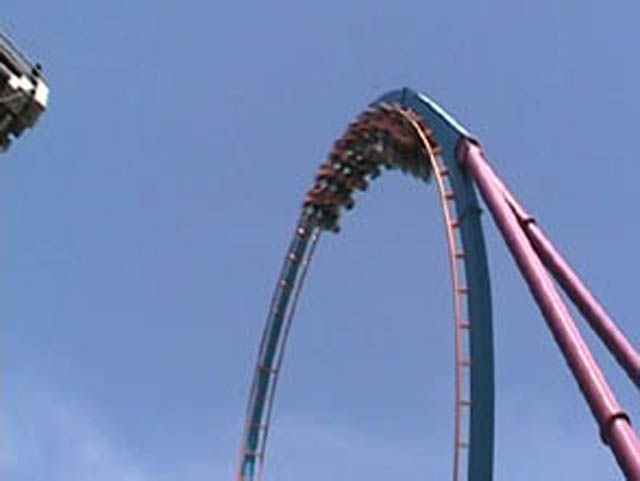
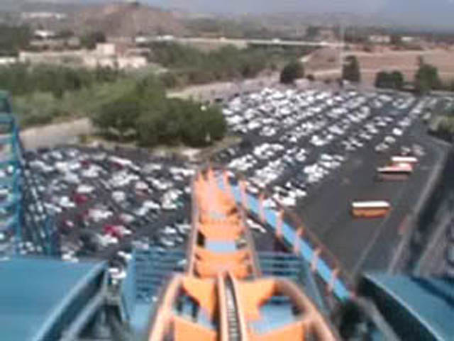
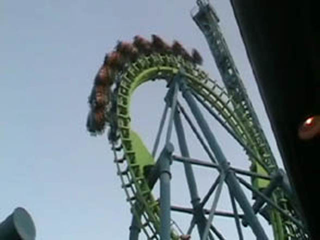

SFHH/SFMM 2007
Today is the one day of the year we go to Hurricane Harbor.
And most of the waterpark looked like this today.
Whats wrong with this sign?
Joining me at SFHH today is Mr. Stands up on rollercoasters, Owner of the Plastic Toy French Fry eating Cody.
 What a better way to start the day by getting your ass kicked on Bamboo Racer.
What a better way to start the day by getting your ass kicked on Bamboo Racer.
Although Pacific Spin is better than Tornado,...
Tornado is still fun and worth riding when theres a short ride.
 Venom Drop is the Human Skip across Water Wedgie Machine.
Venom Drop is the Human Skip across Water Wedgie Machine.
Since we conquered Hurricane Harbor, We went to Magic Mtn. BTW, When did they add these signs? They don't seem very Incrediblecoastersfriendly.
 The best way to have a good ride on Goliath is to call your friends on the rides.
The best way to have a good ride on Goliath is to call your friends on the rides.
 On second thought, don't call your friends on Goliath. You don't want to break the ride like we did. You call always try calling your friends on Riddlers though.
On second thought, don't call your friends on Goliath. You don't want to break the ride like we did. You call always try calling your friends on Riddlers though.

This is Scream. Everything about Scream is Screaminly awsome!

Although I never hear any Screaming on Scream. All I hear is a purdy B&M roar.
 But who cares about that. This is a SCREAMING corkscrew on the SCREAMING SCREAM!!!!!!
But who cares about that. This is a SCREAMING corkscrew on the SCREAMING SCREAM!!!!!!
 Riddlers Revenge may not be SCREAMINGLY awsome, but its got some nice speed and other forces.
Riddlers Revenge may not be SCREAMINGLY awsome, but its got some nice speed and other forces.
 No, you're not seeing things, Tatsu does NOT fold into flying position on the ride anymore. Now they turned it into an Inverted coaster.
No, you're not seeing things, Tatsu does NOT fold into flying position on the ride anymore. Now they turned it into an Inverted coaster.
 I'd like some salt with my pretzal loop please. And could you make it into a message. Mikados Style Please.
I'd like some salt with my pretzal loop please. And could you make it into a message. Mikados Style Please.

DejaVu is getting rougher. I felt a good smack in the head in on the Cobra Roll.
How often do you see this type of line for X in July?
 And who doesn't have fun in X's Magical F**ked up Second Raven Turn?
And who doesn't have fun in X's Magical F**ked up Second Raven Turn?
 Viper hates us so much that it gives you chestbanging. Thats what Viper does when people brush their teeth on rollercoasters.
Viper hates us so much that it gives you chestbanging. Thats what Viper does when people brush their teeth on rollercoasters.
And thanks to lil bastard William, We had to leave early. So here is cody singing a song about him.
Home